🎲 시작 위치는 무작위입니다
모든 플레이어는 녹스 카운티 전역의 무작위 위치에서 시작합니다.
처음부터 함께 시작하지 않으므로 각자 생존 수단을 확보한 뒤 집결지를 향해 이동하세요.
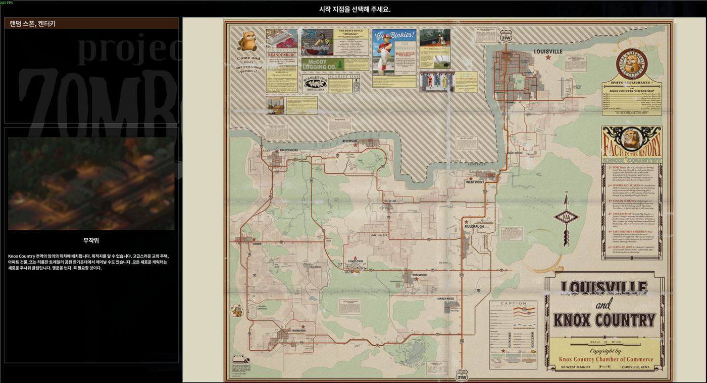
엄보이드에서 알아야 할 기능과 진행 방법을 빠르게 확인하는 플레이 가이드입니다. 게임 중 막히면 하고 싶은 행동을 검색하세요.
각자 다른 곳에서 생존을 시작한 뒤
장비와 차량을 확보해 Iris Eyot으로 모입니다.
이곳은 최종 탈출지가 아니라
모두가 합류하는 집결지입니다.
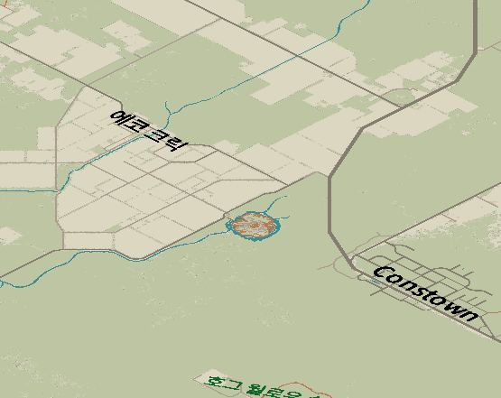
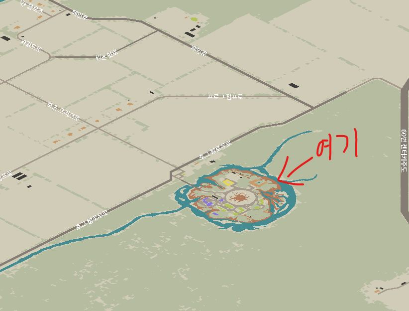
짧게 접속해도 진행한 만큼 세계에 변화가 남고,
친구들과 합류해 녹스 카운티 탈출까지 이어갈 수 있도록 설정합니다.
모든 플레이어는 녹스 카운티 전역의 무작위 위치에서 시작합니다.
처음부터 함께 시작하지 않으므로 각자 생존 수단을 확보한 뒤 집결지를 향해 이동하세요.

열쇠가 없는 차량은
직접 배선을 연결해 시동을 걸 수 있습니다.
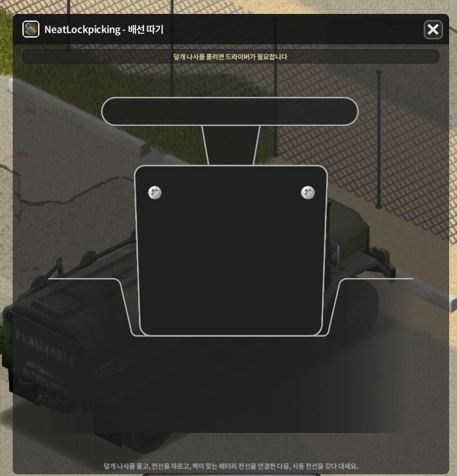
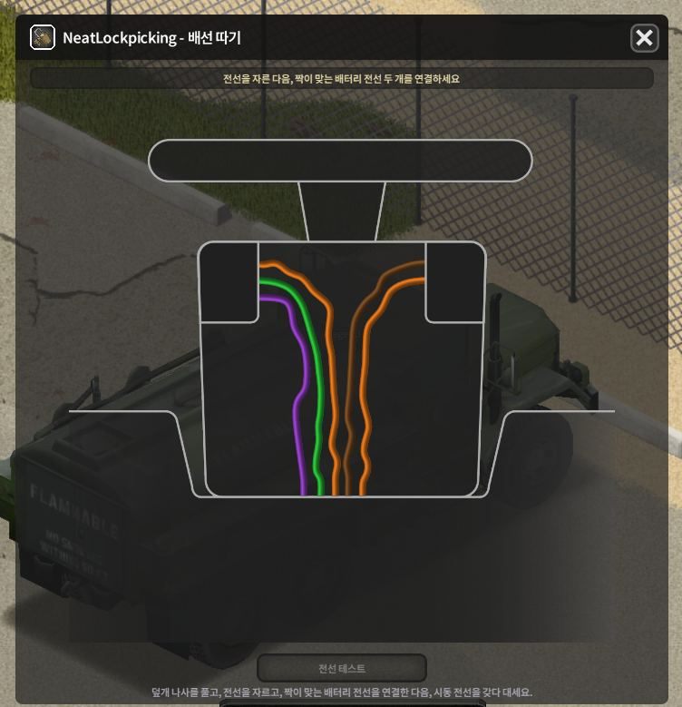
차량 열쇠가 없어도
잠긴 문을 열 수 있습니다.
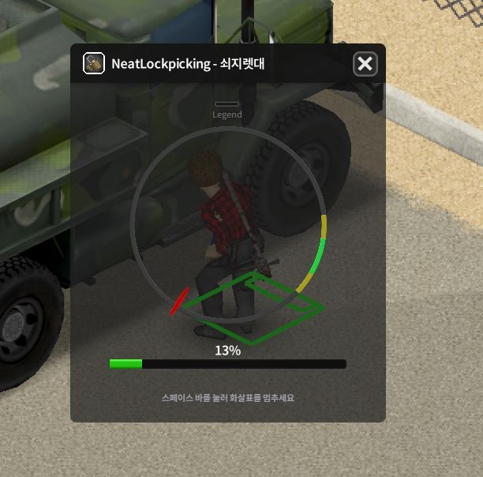
특수 방호복 좀비를 처치하면
좀비 감염 완치제를 얻을 기회가 있습니다.
초반에는 각자 생존합니다.
준비가 되면 위 지도에 표시된 원형 섬으로 이동해
다른 생존자들과 합류하세요.
엄보이드의 최종 목표는
Iris Eyot 도착이 아닙니다.
최종 목표는 녹스 카운티 탈출입니다.
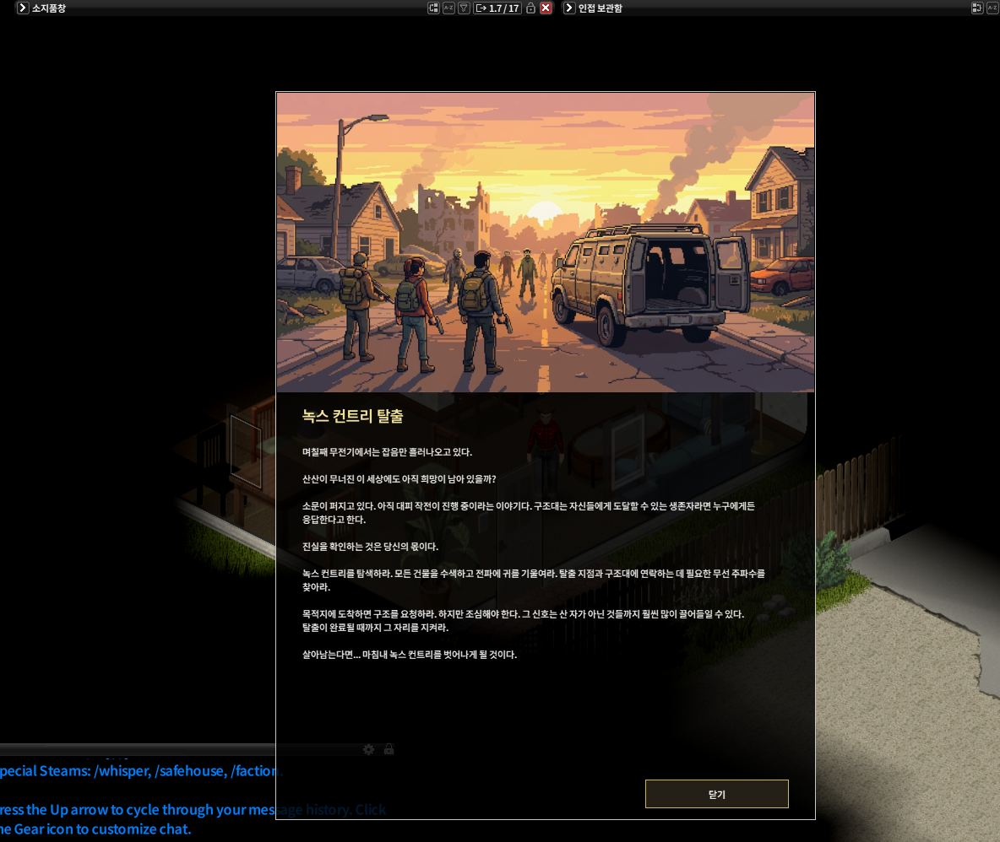
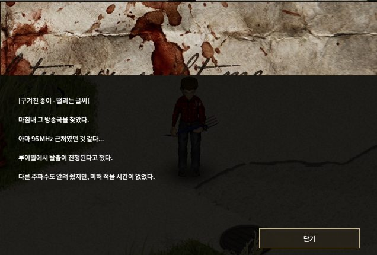
잠긴 건물이나 차량은
무조건 창문을 깨지 않아도 됩니다.
락픽으로 자물쇠를 따거나
쇠지렛대로 강제 진입할 수 있습니다.
캐릭터 생성 시
특성은 무작위 설정으로 진행합니다.
처음 나온 결과가 마음에 들지 않는다면
딱 1회만 다시 뽑기할 수 있습니다.
엄보이드에서는 기본 게임보다
다양한 특성을 사용할 수 있습니다.
일부 특성은 플레이 방식과 성장에 영향을 주므로
캐릭터 생성 시 설명을 확인하세요.
안전해 보이는 상황에서도
대규모 좀비 위협이 발생할 수 있습니다.
장거리 이동이나 거점 정비 때는
항상 퇴로와 차량 상태를 확인하세요.
오류가 발생하면 어떤 행동 직후 문제가 생겼는지 확인해 주세요.
엄보이드에서 사용하는 모드는 이 탭에서만 확인할 수 있습니다.
| # | 모드 이름 | 분류 |
|---|---|---|
| 1 | Fast Reload Speed [B42 / MP] | 편의 / 게임플레이 |
| 2 | Escape Knox County - Extraction mod Korean Patch | 탈출 |
| 3 | Escape Knox County | 탈출 |
| 4 | Iris Eyot [B42] | 맵 |
| 5 | inu's Simple Horde Mod [B42] | 편의 / 게임플레이 |
| 6 | Navigator | Navigation Mod for Project Zomboid B42 | 편의 / 게임플레이 |
| 7 | Lifestyle: Hobbies | 편의 / 게임플레이 |
| 8 | Better Fire Extinguishers [B42] [SP & MP] | 편의 / 게임플레이 |
| 9 | [B42] I Don't Need A Lighter | 편의 / 게임플레이 |
| 10 | [B42] Drag Bodies Faster | 편의 / 게임플레이 |
| 11 | [B42.20] Better Flashlights | 편의 / 게임플레이 |
| 12 | '93 Chevrolet Suburban / Silverado | 차량 |
| 13 | '90 Pierce Arrow Pumper and Ladder Trucks | 차량 |
| 14 | '89 Isuzu Trooper | 차량 |
| 15 | '80 MAN KAT1 | 차량 |
| 16 | '63 Volkswagen Type 2 Van | 차량 |
| 17 | '49 Dodge Power Wagon Crew Cab | 차량 |
| 18 | Tidy Up Meister | 편의 / 게임플레이 |
| 19 | Cye's Push Doors! [SP/MP] | 편의 / 게임플레이 |
| 20 | '87 Ford B700/F700 Trucks | 차량 |
| 21 | Fast Reading [SP/MP] 42.20 | 편의 / 게임플레이 |
| 22 | Rain Cleans Blood [B42.20 + MP] | 편의 / 게임플레이 |
| 23 | [B42.20]Zero Weight Keys | 편의 / 게임플레이 |
| 24 | [B42] Random Spawn Locations [SP/MP] | 편의 / 게임플레이 |
| 25 | They Knew [B42] - 42.19 Fix | 감염 / 치료 |
| 26 | They Knew [B42] | 감염 / 치료 |
| 27 | Unified Carry Weight Framework (UCWF) | 필수 / 관리 |
| 28 | More Traits [Legacy, read description] | 특성 / 성장 |
| 29 | Ping Items! Friends! 42.20 MP Official | 편의 / 게임플레이 |
| 30 | [B42.20+/MP] Bicycle! | 차량 |
| 31 | Swap It | 편의 / 게임플레이 |
| 32 | Trailers! | 차량 |
| 33 | '86 Oshkosh P19A + Military Trailers | 차량 |
| 34 | '78 AM General M35 Series Trucks | 차량 |
| 35 | '92 AM General M998 + M101A3 Cargo trailer | 차량 |
| 36 | '89 LAND ROVER Defender | 차량 |
| 37 | '04 Volkswagen Touran | 차량 |
| 38 | that DAMN Library | 필수 / 관리 |
| 39 | '89 Dodge Caravan | 차량 |
| 40 | Authentic Z | 편의 / 게임플레이 |
| 41 | Traits As Skills | 특성 / 성장 |
| 42 | Realistic Dashboard & Gauges [MP] | 차량 |
| 43 | [B42.20] The Only Cure | 감염 / 치료 |
| 44 | Mod Update and Alert System | 필수 / 관리 |
| 45 | errorMagnifier | 필수 / 관리 |
| 46 | Mod Load Order Sorter [b42] | 필수 / 관리 |
| 47 | [B42] Mod Manager | 필수 / 관리 |
| 48 | Hx's 좀보이드 통합 번역 | 필수 / 관리 |
| 49 | [B42+] Sandbox Options | 필수 / 관리 |
| 50 | [B42.20.3] Simple Belt Flashlight+ (Better Flashlights Compatible) | 편의 / 게임플레이 |
| 51 | Detailed Skill Tooltips | 편의 / 게임플레이 |
| 52 | Repair Any Clothes | 편의 / 게임플레이 |
| 53 | Common Sense B42.20 - Community Compatibility Fix | 편의 / 게임플레이 |
| 54 | PZLinux B42.17 | 편의 / 게임플레이 |
| 55 | Neat Crafting [B42] | 편의 / 게임플레이 |
| 56 | Neat Building [B42] | 편의 / 게임플레이 |
| 57 | NeatUI Framework [B42] | 필수 / 관리 |
| 58 | CleanUI [B42] | 편의 / 게임플레이 |
| 59 | Clean HotBar [B42] | 편의 / 게임플레이 |
| 60 | Proximity Inventory B42.20+ | We are so back | 편의 / 게임플레이 |
| 61 | [42.20MP] GoM - Guns of Marz | 총기 |
| 62 | Hot Brass - Visible Casing Ejection | 총기 |
| 63 | Little Town - B42 | 맵 |
| 64 | Constown (B42) | 맵 |
| 65 | Raven Creek B42 | 맵 |
| 66 | Fort Waterfront B42 | 맵 |
| 67 | Ashenwood B42 Unstable (with no custom tiles) | 맵 |
| 68 | AnruisiTown (Military Bastion) | 맵 |
| 69 | West Point Expansion B42 | 맵 |
| 70 | Map All Known Fix [B42] | 편의 / 지도 |
| 71 | Neat Lockpicking | 차량 / 잠금 |
| 72 | Fitness & Workout Overhaul | 운동 / 성장 |
| 73 | Alice's Weapon Sling | 무기 / 편의 |
| 74 | Guns of Marz: Attachment Workbench | 총기 / 인터페이스 |
오늘 적용한 모드 변경과 좀비 밸런스 조정 내역입니다.
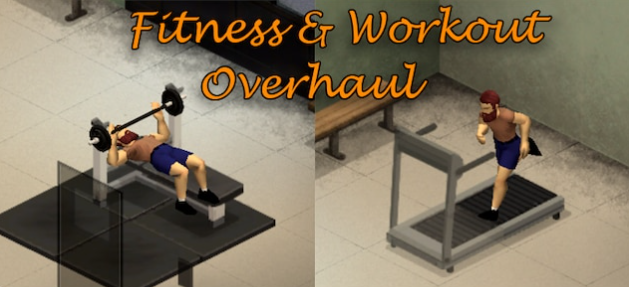
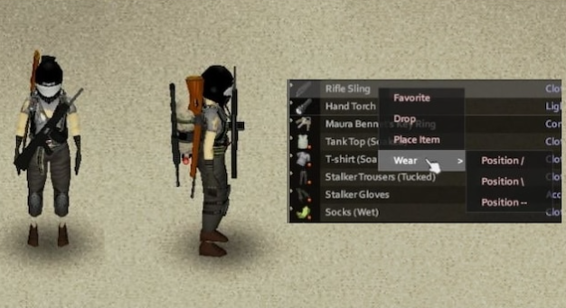
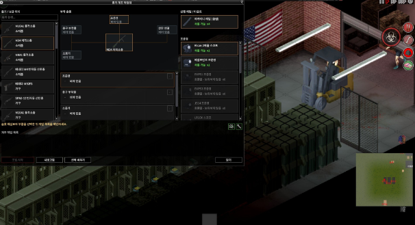
Guns of Marz 전용 총기 모딩 UI를 추가합니다. 총기 슬롯, 장착 부품과 호환 부품을 한 화면에서 확인할 수 있습니다.
Steam 창작마당 보기 ↗